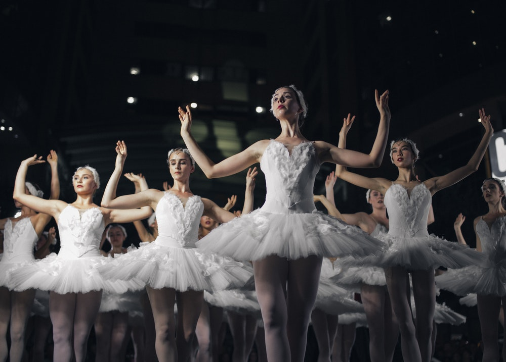

DANCE
It is an art form that is performed by dancers, as a solo
or a group dance. Dancing is frequently accompanied with music and
can be used for expression of thoughts or emotion, has a cultural
or religious value, for entertainment and also for the health for
healing and as exercise.
________________________________________
HISTORY
Archaeology delivers traces of dance from prehistoric times
such as the 30,000-year-old Bhimbetka rock shelters paintings in
India and Egyptian tomb paintings depicting dancing figures from
3300BC. Many contemporary dance forms can be traced back to
historical, traditional, ceremonial, and ethnic dances of the
ancient period.

WHY YOU SHOULD JOIN?
The goal of the association is to show
that dancing is fun and can be good for
a person's health. The MOVE IT association
can also let the youth be more active in physical
activities, can serve as an inspiration for anyone,
and may further build up your confidence. There is
also no specific age limit to join, so that anyone
could have the chance to participate!